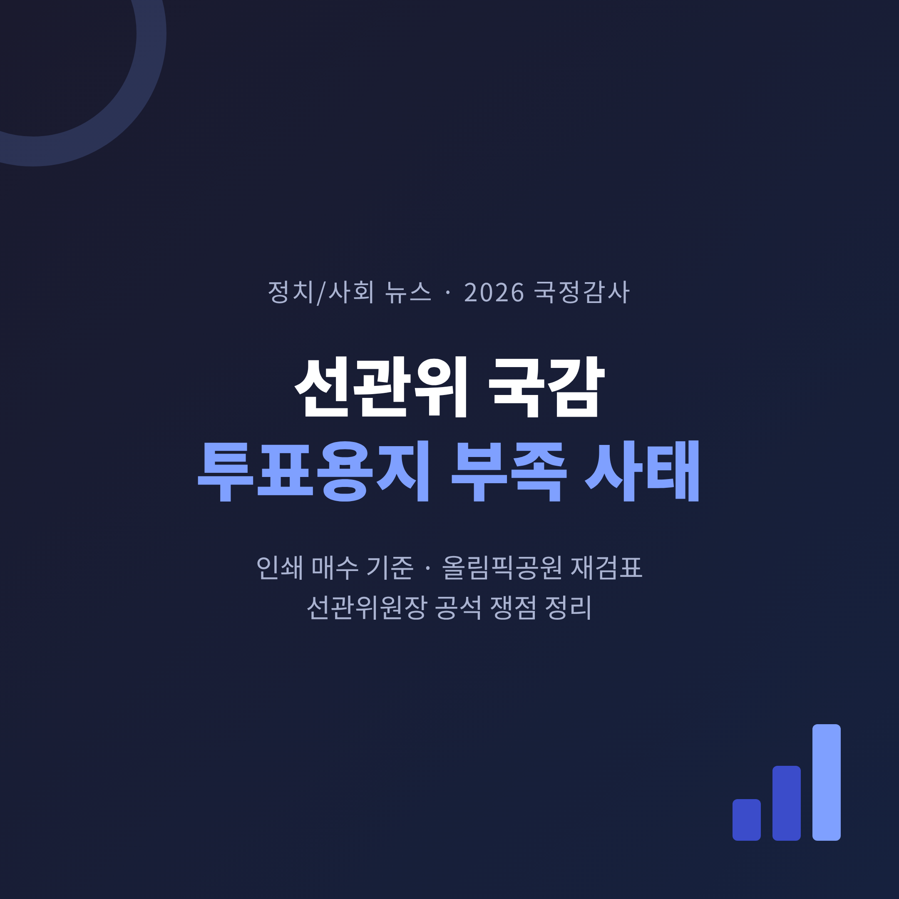
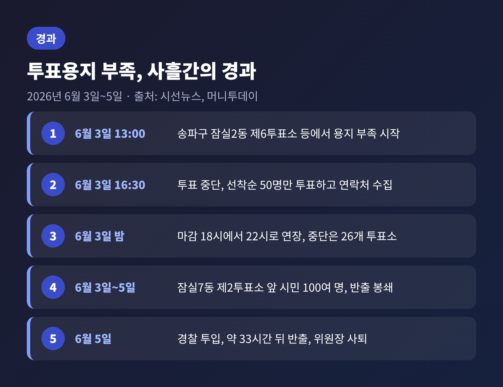
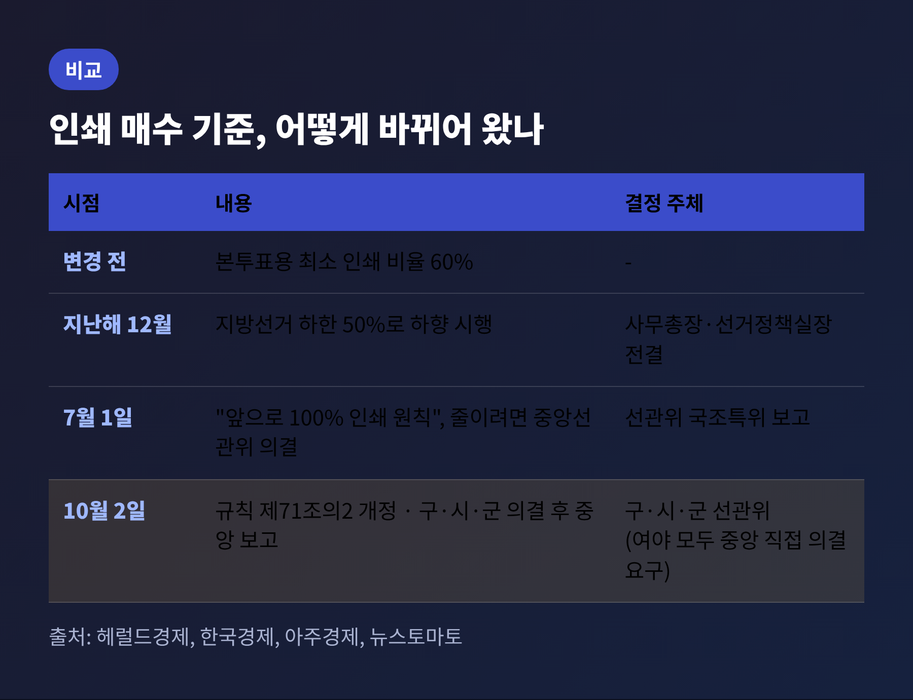
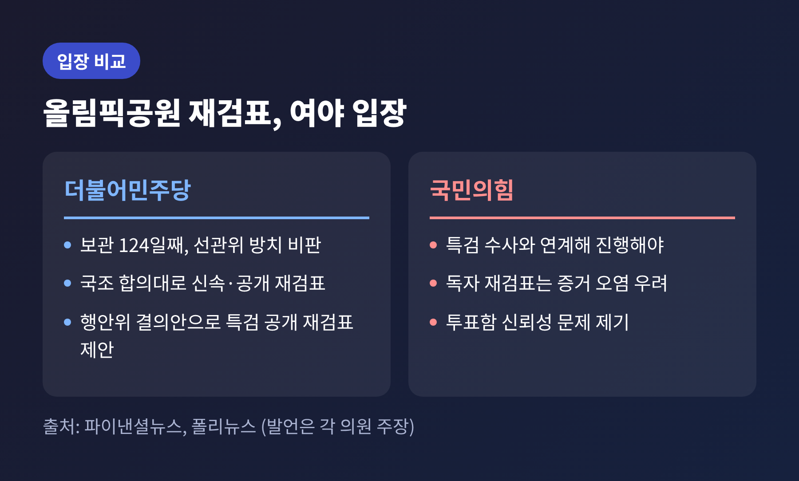
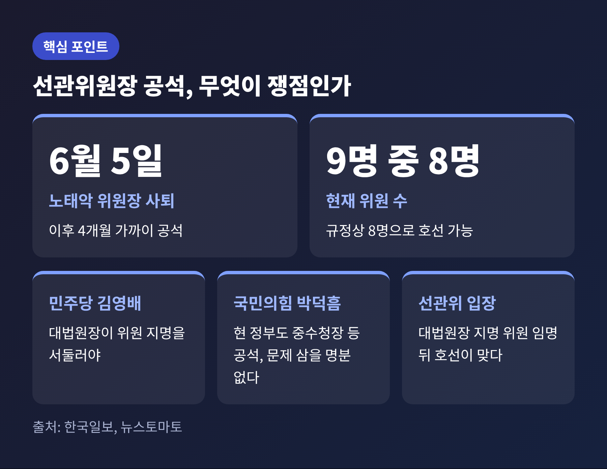
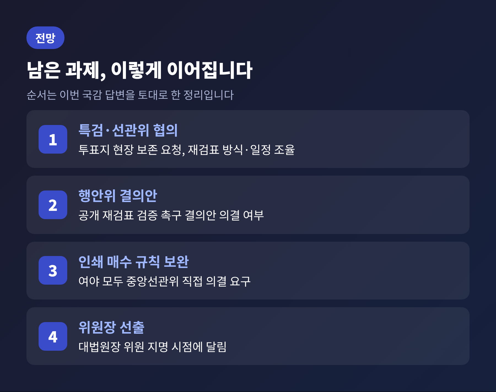

오늘은 지난 7일 국회 행정안전위원회 국정감사에서 다뤄진 중앙선거관리위원회의 6·3 지방선거 투표용지 부족 사태를 정리해 보려 합니다. 여야 모두 선관위를 질타했지만, 무엇을 문제로 보는지는 서로 달랐습니다. 핵심은 투표용지 인쇄 매수 기준, 올림픽공원 보관 투표지 재검표, 넉 달 가까이 비어 있는 선관위원장 자리, 이 세 가지입니다.
2026년 10월 7일, 행안위는 중앙선관위를 상대로 국정감사를 열었습니다. 출석한 위철환 중앙선관위원장 직무대행은 "다시 한번 머리 숙여 깊이 사죄드린다"고 말했습니다. 이번 일을 일회성 실수가 아니라 선거관리체계 전반의 구조적 문제로 규정하기도 했습니다.
쇄신 방향은 조직 개편, 투·개표 절차 개선, 정치관계법 개정의 세 갈래라고 밝혔습니다. 세부 내용은 이번 보도에서 확인되지 않았습니다.
의원들의 반응은 매서웠습니다. 더불어민주당 양부남 의원은 선관위의 후속 조치를 두고 "눈 가리고 아웅"이라고 했습니다. 국민의힘 박상웅 의원은 선관위 업무 혼란으로 민주주의가 국제적 웃음거리가 됐다고 비판했습니다. 사과와 "분골쇄신" 다짐만으로는 부족하다는 지적도 덧붙였습니다.

시계를 6월 3일로 돌려 보겠습니다. 이날 오후 1시경 서울 송파구 잠실2동 제6투표소 등에서 투표용지가 모자라기 시작했습니다. 오후 4시 30분부터는 투표가 중단됐습니다. 현장에서는 대기자 중 선착순 50명만 투표하게 하고 나머지는 연락처를 받았다고 전해집니다. 유권자들이 강하게 항의했습니다.
선관위는 대기표를 받은 유권자에 한해 투표 마감을 오후 6시에서 10시로 늦췄습니다. 이 때문에 출구조사 공개 이후에도 투표가 이어져 공정성 논란이 일었습니다. 머니투데이 보도에 따르면 투표가 중단된 곳은 서울·부산·대구·인천·경기 26개 투표소였습니다.
혼란은 투표소 밖으로 번졌습니다. 잠실7동 제2투표소 앞에 시민 100여 명이 모여 투표함 반출을 막았고, 5일 오전 경찰이 투입되어서야 투표함이 나왔습니다. 투표가 끝난 지 약 33시간 뒤였습니다. 그 사이 노태악 중앙선관위원장은 5일 저녁 사퇴했고, 허철훈 사무총장은 면직됐습니다. 위원장과 사무총장이 함께 물러난 것은 2022년 대선 '소쿠리 투표' 이후 처음입니다.
결과에도 영향이 있었습니다. 서울시의회 비례대표 1석이 민주당에서 국민의힘으로 넘어갔습니다. 정당 득표율은 국민의힘 44%, 민주당 43.86%로 0.14%포인트 차였습니다.

원인은 인쇄 하한이었습니다. 선관위는 이번 지방선거부터 본투표용 용지의 최소 인쇄 비율을 선거인 수의 60%에서 50%로 낮췄습니다. 지난해 11월 24일 중앙선관위 회의에 보고된 뒤, 12월 사무총장과 선거정책실장 전결로 시행됐습니다. 위원회 차원의 논의는 없었습니다.
잠실7동 제2투표소의 경우 선거인이 3,856명이었는데 용지는 1,900매, 즉 49.3%만 배정됐습니다. 기준대로면 1,928매였지만, 100매 미만을 버리는 절삭 규정 때문에 더 적어졌습니다.
선관위는 사태 이후 대응을 내놓았습니다. 6월 16일에는 인쇄 매수 산정 전면 재검토를 포함한 5대 재발방지책을 냈습니다. 7월 1일에는 국정조사특위에 "앞으로는 100% 인쇄가 원칙이고, 줄이려면 중앙선관위 의결을 거치겠다"고 보고했습니다.
그런데 이번 국감에서 문제가 된 것은 10월 2일 개정된 중앙선거관리규칙 제71조의2입니다. 인쇄 매수 결정이 사무총장 전결에서 구·시·군 선관위 의결 후 중앙선관위 보고로 바뀌었습니다. 양부남 의원은 국정조사에서 요구한 것은 중앙선관위의 의결이었다며, 중앙선관위가 보고만 받는 구조라고 비판했습니다.
흥미로운 점은 야당도 같은 방향이라는 것입니다. 국민의힘 권영진 의원은 선관위가 개선했다면서 책임을 구·시·군 선관위에 떠넘겼다고 지적하며, 중앙선관위가 직접 의결하라고 요구했습니다. 선관위는 인쇄 기간이 약 10일로 짧은 점을 고려했다고 설명했습니다. 지적 사항은 추가로 검토하겠다고 답했습니다.

투표지 약 247만 장은 서울 올림픽공원에 보관되어 있습니다. 국정조사특위는 8월 18일 재검표에 잠정 합의했지만, 실제로 열리지는 않았습니다. 시기와 주체를 두고 여야가 갈렸기 때문입니다.
당시 여당은 합의대로 즉시 진행하자고 했습니다. 국민의힘은 특검 수사와 연계해야 한다는 입장이었습니다. 서범수 의원은 "특검 수사가 임박했는데 기다리지 못할 이유가 없다"고 했습니다. 독자적 재검표가 증거를 오염시킬 수 있다는 논리입니다.
이번 국감에서 윤건영 민주당 의원은 보관 124일째라며 선관위가 무엇을 했느냐고 따졌습니다. 수백억 원의 손해가 발생하고 있다는 주장도 했는데, 산정 근거는 제시되지 않았습니다. 같은 맥락에서 현장이 극우 세력의 '놀이터'가 되고 있다고도 했습니다. 반면 박상웅 의원은 올림픽공원에 진상 규명을 요구하는 청년들이 있다고 언급했습니다. 같은 현장을 보는 시각이 다른 셈입니다.
김영배 민주당 의원은 행안위원 전원 명의로 '보관 투표지 공개 재검표 검증 촉구 결의안'을 발의했습니다. 여야 간사 합의로 행안위 의결을 거쳐 특검이 공개 재검표를 하자는 제안입니다. 선관위는 특검이 현장 보존을 요청한 상태라며 "협의해 가능한 한 빨리 검증하겠다"고 답했습니다. 윤 의원의 질타에는 "드릴 말씀이 없다"고 했습니다.
선관위 특검의 수사는 진행 중입니다. 9월 17일 중앙·지방 선관위 등 10곳을 압수수색했고, 22일부터 포렌식 수사관이 상주하고 있습니다. 인쇄 하한을 낮춘 경위와 지휘부 관여 여부도 수사 대상입니다. 기본 수사 기간은 90일이며, 두 차례 연장하면 최장 150일입니다.

노태악 전 위원장이 6월 5일 물러난 뒤 위원장 자리는 비어 있습니다. 위원 정원은 9명인데 현재 8명입니다. 김영배 의원은 조희대 대법원장이 위원 지명을 서둘러야 한다며, 위원 8명이 함께 요청하라고 압박했습니다.
선관위 측 설명은 이렇습니다. 규정상 8명만으로도 위원장을 호선할 수 있습니다. 다만 위원들은 대법원장이 지명한 위원이 임명된 뒤 선출하는 것이 맞다고 본다고 밝혔습니다.
국민의힘 박덕흠 의원은 반박했습니다. 현 정부에서도 중수청장, 경찰청장, 공수처장 등이 공석인데 선관위원장 직무대행만 문제 삼을 명분이 없다는 것입니다. 공백의 책임을 어디에 두느냐가 여야 사이 유일하게 갈린 대목이었습니다.
진종오 국민의힘 의원은 딥페이크 관리를 짚었습니다. 선거일 90일 전부터는 AI로 만든 이미지·영상의 제작과 게시가 금지됩니다. 올해 선관위가 삭제를 요청한 위법 게시물은 10,733건인데, 약 3분의 1이 삭제되지 않았다고 했습니다.
강명구 국민의힘 의원은 이재명 대통령이 5월 29일 사전투표 때 투표지를 든 채 기표소 밖으로 나온 일을 거론했습니다. 일반 유권자였다면 무효 처리됐을 텐데 형평성이 맞느냐는 질문입니다. 선관위는 촬영된 영상 세 종류를 토대로 투표지가 공개된 것으로 보지 않았으며, 봐준 것은 아니라고 답했습니다.
권영진 의원은 채용비리 수사를 받는 직원 현황을 선관위가 공식 파악하지 못한 점을 직무유기라고 따졌습니다.

남은 과제는 순서가 있습니다. 먼저 특검과 선관위의 협의입니다. 재검표는 여기서 방식과 일정이 정해져야 움직일 수 있습니다. 행안위가 결의안을 의결할지도 변수입니다. 다음은 인쇄 매수 규칙 보완입니다. 여야가 모두 중앙선관위 직접 의결을 요구하고 있어, 이 부분은 비교적 접점이 넓어 보입니다. 마지막은 위원장 선출입니다. 대법원장의 위원 지명 시점에 달려 있습니다.
한계도 분명합니다. 재검표 결과가 어떻게 나오든 한쪽은 받아들이고 다른 쪽은 의심할 수 있습니다. 확인된 사실은 이 사태가 인쇄 하한을 낮춘 결정과 작동하지 않은 보고 체계에서 비롯됐다는 점입니다. 부정선거 논란과는 구분해서 볼 필요가 있다는 대통령의 발언도 있었습니다. 그렇다고 의혹 제기 자체를 막을 수는 없으니, 투명한 검증 절차가 답이 될 것입니다.
정리하면 이렇습니다.
선관위 국감에서 여야는 질타의 방향은 같았고, 해법의 순서에서 갈렸습니다. 한쪽은 신속한 재검표를, 다른 쪽은 특검 이후의 검증을 앞세웁니다. 선거관리의 신뢰는 사과의 크기가 아니라 절차의 투명함에서 회복됩니다.
선관위가 다음 선거에서 "용지가 모자랐다"는 말을 다시 듣지 않을 수 있느냐고 물으신다면, 이번 규칙 개정이 어디까지 보완되는지 지켜봐야 한다고 답하겠습니다.
참고: 파이낸셜뉴스, 한국일보, 헤럴드경제, 아주경제, 폴리뉴스, 프레시안, 뉴스토마토, 시선뉴스, 머니투데이, 한국경제 보도 (2026.6~10)